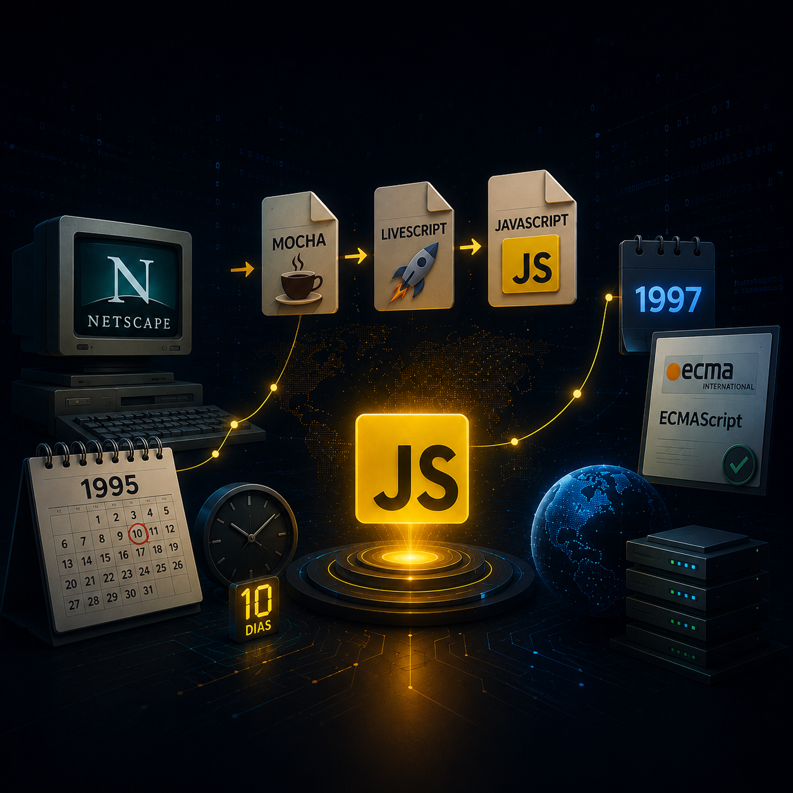

JavaScript é uma linguagem de programação utilizada para criar páginas web dinâmicas e interativas. Com ela é possível manipular elementos da página, validar formulários, criar animações, atualizar conteúdos em tempo real e desenvolver aplicações completas para navegadores e servidores. Atualmente, JavaScript é uma das três principais tecnologias da Web, juntamente com HTML e CSS.
Com o crescimento da internet na década de 1990, surgiu a necessidade de tornar os sites mais interativos. Para atender essa demanda, foi criada a linguagem JavaScript. Hoje ela está presente em praticamente todos os navegadores modernos e é utilizada tanto no desenvolvimento Front-End quanto no Back-End por meio de tecnologias como Node.js.

JavaScript foi criado em 1995 por Brendan Eich, engenheiro da Netscape Communications. A primeira versão da linguagem foi desenvolvida em apenas 10 dias. Inicialmente recebeu o nome de Mocha, depois LiveScript e, posteriormente, JavaScript. Em 1997, a linguagem foi padronizada pela ECMA International através do padrão ECMAScript.
JavaScript é considerado uma das linguagens mais importantes da computação moderna porque possibilita a criação de aplicações web interativas. Atualmente é utilizado em sites, sistemas empresariais, plataformas de streaming, redes sociais, jogos online, aplicativos móveis e serviços em nuvem.
JavaScript foi desenvolvido em apenas 10 dias.
Apesar do nome parecido, JavaScript e Java são linguagens diferentes.
A linguagem foi inicialmente chamada de Mocha e depois LiveScript.
O padrão oficial da linguagem chama-se ECMAScript.
Mais de 90% dos sites utilizam JavaScript em alguma funcionalidade.
alert("Olá, Mundo!");console.log("Bem-vindo ao JavaScript!");let numero1 = 10;
let numero2 = 20;
console.log(numero1 + numero2);let idade = 18;
if (idade >= 18) {
console.log("Maior de idade");
} else {
console.log("Menor de idade");
}JavaScript revolucionou a forma como as aplicações web são desenvolvidas. Sua capacidade de criar páginas dinâmicas, aliada à facilidade de uso e à grande comunidade de desenvolvedores, tornou a linguagem indispensável para a internet moderna. Mesmo apresentando algumas limitações, JavaScript continua evoluindo e sendo uma das tecnologias mais importantes para o desenvolvimento de software.